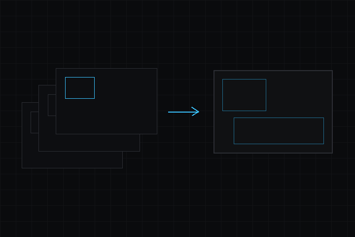

- 다음에 의해 생성됨 :
 1.18.0
1.18.0
|
deki-rendering 0.20.2
Deki 패키지 레퍼런스
|

핵심 렌더링 파이프라인: 카메라, 렌더 시스템, 표준 2D 렌더러, QuadBlit, 렌더 패스, 정렬.
저장소: github.com/dekiengine/deki-rendering · 최신 릴리스: 0.20.0 · 엔진 0.20.0 이상 필요
DekiEditor --packages-add deki-rendering <project> 또는 패키지 관리자로 설치합니다. 엔진 자체의 컴포넌트와 C++ API는 Deki 문서에 있습니다.
에디터에는 Rendering(으)로 표시됩니다.
| 컴포넌트 | 카테고리 | 설명 |
|---|---|---|
| CameraComponent | 코어 | 뷰입니다. 위치, 보여 줄 월드의 범위, 클리어 색상을 정합니다. |
뷰입니다. 위치, 보여 줄 월드의 범위, 클리어 색상을 정합니다.
인스펙터 이름: 카메라 컴포넌트 · 카테고리: 코어 · 유형: DekiRendering::CameraComponent
| 속성 | 유형 | 기본값 | 제약 | 설명 |
|---|---|---|---|---|
| clearColor | Color | "#314D79FF" | 무언가를 그리기 전에 화면을 채우는 색상입니다. 아무것도 덮지 않은 곳에 이 색상이 보입니다. | |
| projection | enum | "Orthographic" | Orthographic, Perspective | 직교는 월드의 고정된 높이를 평평하게 보여 줍니다. 원근은 시야각으로 깊이를 보여 주며 3D 메시용입니다. 스프라이트는 여전히 평평하게 그려집니다. |
| orthoHeight | float | 15 | 0.01~100000; 단위 m; projection이(가) 허용할 때 표시 | 카메라가 위에서 아래까지 보여 주는 월드의 양입니다. 모든 화면은 이 값을 높이에 꽉 차게 스케일합니다(옆의 x가 배율입니다). |
| pixelPerfect | bool | false | projection이(가) 허용할 때 표시 | 픽셀 아트용입니다. 정수 배율로만 스케일하므로 아트의 모든 픽셀이 화면에서 같은 크기가 되고, 카메라를 아트 픽셀 그리드에 맞춥니다. 배율은 내림하므로 카메라는 직교 높이보다 조금 더 넓게 보여 주며, 1x에 못 미치는 작은 화면에서는 잘립니다. |
| fieldOfView | float | 60 | 10~150; projection이(가) 허용할 때 표시 | 세로 시야각(도)입니다. 화면이 넓을수록 양옆이 더 많이 보입니다. 60이 일반적인 기본값이며, 크게 할수록 넓어 보이고 가장자리가 더 왜곡됩니다. |
| nearPlane | float | 0.1 | projection이(가) 허용할 때 표시 | 이보다 가까운 것은 그려지지 않습니다. 높여도 비용이 들지 않고 깊이 정밀도가 좋아지므로 씬이 허용하는 한 크게 유지하세요. |
| farPlane | float | 100 | projection이(가) 허용할 때 표시 | 이보다 먼 것은 그려지지 않습니다. |
| clearEveryFrame | bool | true | 매 프레임 전에 화면을 클리어합니다. 끄면 이전 프레임이 아래에 남습니다. 전체 화면 배경이 모든 것을 덮을 때는 더 빠르고, 잔상을 원할 때도 가끔 쓸 수 있습니다. |
프로젝트 설정 섹션 Rendering(RenderingProjectSettings)입니다.
카테고리: 설정 · 유형: DekiRendering::RenderingProjectSettings
| 속성 | 유형 | 기본값 | 제약 | 설명 |
|---|---|---|---|---|
| dirtyTileTracking | bool | false | 변경 영역 추적: 각 프레임이 그린 사각형을 기록하고, 다음 프레임에서는 그 부분만 클리어하며, 바뀐 부분(이번 프레임과 지난 프레임의 사각형)만 디스플레이로 보냅니다. 대부분 정적인 씬에서 효과가 크고, 전체가 움직이는 씬에서는 관리 비용이 조금 듭니다. 부분 프레임을 표시할 수 없는 디스플레이에는 여전히 전체 프레임을 보냅니다. | |
| dirtyTileSize | int32 | 32 | 1~256; dirtyTileTracking이(가) 허용할 때 표시 | 변경 사각형의 정렬 단위(픽셀)입니다. 각 사각형은 이 값의 배수로 넓혀집니다. 크면 더 적고 큰 전송이 되며 작은 움직임은 같은 사각형을 재사용합니다. 작으면 사각형이 더 촘촘해집니다. |
| frameMode | enum | "Auto" | Auto, WholeFrames, Strips | 각 프레임을 화면에 보내는 방식입니다. Auto(기본값)는 게임이 시작될 때 장치에서 고릅니다. 프레임 버퍼가 내부 RAM에 여유 있게 들어가면 전체 프레임, 들어가지 않으면 스트립입니다(픽셀당 2바이트인 536x240 화면은 257 KB로, ESP32-S3의 내부 RAM 여유 공간보다 큽니다). 전체 프레임은 각 프레임을 버퍼 하나에 한 번 그리며, 그 버퍼가 내부 RAM에 있으면 더 빠릅니다. 스트립은 내부 RAM의 작은 버퍼에 몇 행씩 그리고, 다음 스트립을 그리는 동안 각 스트립을 보냅니다. PSRAM에 전체 프레임을 그리는 것보다 훨씬 빠릅니다. 둘 다 같은 픽셀을 만들고 모든 기능을 유지합니다. 어느 쪽을 쓰는지와 그 이유는 부팅 로그와 DEKI:STATS에 표시됩니다. 에디터는 항상 전체 프레임을 그립니다. |
| bandRows | int32 | 40 | 2~256 | 프레임을 스트립으로 그릴 때 각 스트립의 행 수입니다. 대부분의 화면에는 40이 맞습니다. 스트립이 높을수록 한 프레임에 장면을 도는 횟수가 줄지만 내부 RAM을 더 씁니다: 스트립 하나와 전송용 복사본 두 개, 각각 화면 너비 × 이 행 수 × 픽셀당 2바이트입니다. |
변경 내역은 영어로 되어 있습니다.
이전 릴리스: CHANGELOG.md
패키지의 리플렉션 데이터에서 생성했습니다(엔진 0.20.2). 속성 이름은 씬 파일에서 쓰는 키입니다. 이름을 바꿔도 별칭이 유지됩니다(호환성).